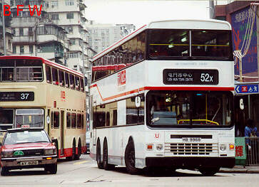
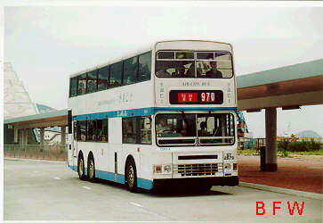

第 十 六 期 巴 士 之 訊 路 線 情 報
Route News of 16th BUS FOCUS
Route News of 16th BUS FOCUS
新線 九鐵
K3：屯門市中心←→大欖涌 這是青嶼幹線煙花匯演的特別服務，全程$6.00。 (97.4.27祇辦一晚) 經（←屯匯街、屯喜路）（屯門鄉事會路、屯興路→）、屯門公路、小欖交匯處、青山公路。 九巴
277：元朗（西）←→落馬洲公共交通轉車站 空調服務，全程$6.00。 (97.3.20開辦) 經青山公路元朗段、（朗日路→）、博愛交匯處、青山公路、新田公路、新田交匯處、青山公路。

41A：華富（中）←→北角碼頭 空調服務，每天全日行走，尾車晚上11:00，全程$6.50，繞經寶馬山。 (97.4.21開辦, 取代中巴41) 經華富道、石排灣道、香港仔海傍道、（香港仔大道→）、黃竹坑道、南風道、深水灣道、黃泥涌 峽道、大坑道、勵德村道、怡景道、雲景道、寶馬山道、天后廟道、炮台山道、英皇道、←書局街 ／琴行街→。上學及放學時間繞經寶馬山巴士總站。

171P：海怡半島─→長沙灣 九巴及城巴合辦，171不經利東的平日晨早特別班次，全程$9.90。(97.4.1開辦) 經怡南路、海怡路、鴨利洲橋道、黃竹坑道、香港仔隧道、堅拿道天橋、海底隧道、康莊道、漆咸 道南、加士居道、彌敦道、長沙灣道、長順街。
105A：中環（港澳碼頭）←→紅磡海隧繳費廣場（循環線） 九巴及中巴合辦，全程普通$6.80/空調$8.30。平日繁忙時間行走，上午祇提供紅隧往中環的服務， 下午提供全程循環線，週六下午、星期日及假期暫停。(97.5.1開辦) 經（干諾道中、林士街、德輔道中、金鐘道、軒尼詩道、分域街、駱克道、軍器廠街、告士打道、 菲林明道、灣仔碼頭巴士總站、港灣道、杜老誌道、鴻興道、海底隧道、康莊道） *、康莊道、海 底隧道、告士打道、分域街、軒尼詩道、金鐘道、德輔道中、禧利街及干諾道中。 (* 上午班次不 設往九龍服務) （經西區過海隧道巴士線請看第 16 頁） 改動 九巴
中巴

九巴寬座位巨龍衹載119人,不少派往次繁忙路線 65：來回程繞經舂坎角及馬坑村。 (97.3.28起) 來回程途經淺水灣道、舂磡角道（海灘調頭）、環角道（馬坑村調頭）、舂磡角道、赤柱峽道， 返回原線。北角開班次，先經舂磡角海灘；赤柱村開班次，先經馬坑村。
新線：荃灣青龍頭←→中環皇后碼頭 每日服務時間上午7:00至下午7:35，全程$15.00。 (97.4.12開辦)
西區過海隧道巴士新線
 |
 |